Jooyoung Hahn
Jooyoung Hahn is an Assistant Professor of Applied Mathematics at the Faculty of Nuclear Sciences and Physical Engineering, Czech Technical University in Prague. His main work is on finite-volume schemes for partial differential equations on general 3‑D polyhedral meshes, in particular level-set equations, eikonal equations. He also works on geometry-informed topological data analysis applied to biomedical and chemical data, and on neural-network solvers for PDEs; his earlier research was on variational and PDE-based image processing and surface reconstruction. He received his PhD at KAIST and held postdoctoral positions at NTU Singapore and the University of Graz, then spent almost 10 years at AVL in Graz as a numerical-methods developer for industrial CFD and combustion, and was a SASPRO2 Marie Skłodowska-Curie Fellow in Bratislava from 2022 to 2025.
Funded 3-year PhD position in the GAČR project MIND-MAP: PDEs, deep learning and geometry-informed topological data analysis for 3D + time microglia imaging. Apply by 31 October 2026.
Research
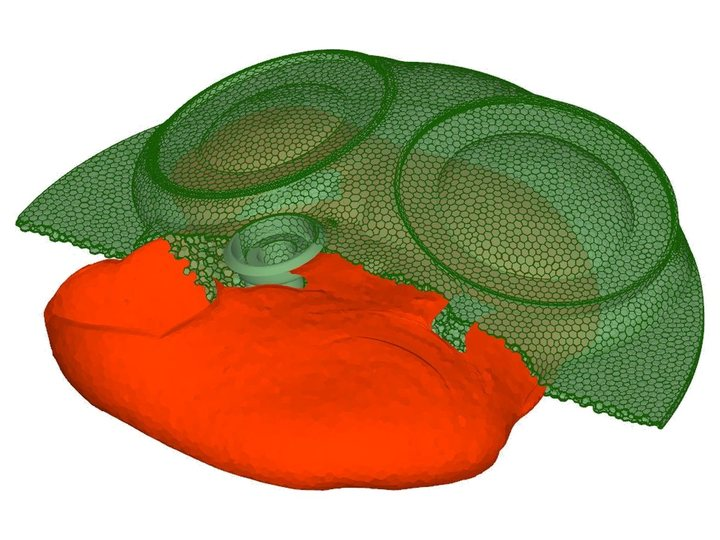
G-equation flame surface (red) inside the polyhedral mesh of an engine combustion chamber.Finite-volume methods for PDEs
Cell-centered finite-volume methods on 3‑D polyhedral meshes for level-set, eikonal, mean-curvature-flow and diffusion equations, with applications to engine combustion, and condition-number bounds for MILU preconditioners.10 papersShow papers
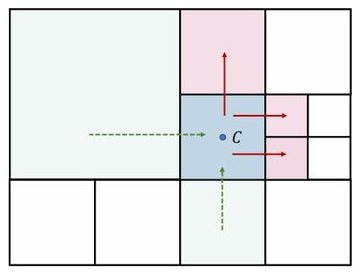
Localized Estimation of Condition Numbers for MILU Preconditioners on a Graph
2026 · SIAM Journal on Numerical Analysis
Defines MILU preconditioners on weighted graphs and bounds their condition number by a per-vertex local estimator, giving O(h⁻¹) bounds for wide-stencil finite differences and quadtree/octree grids.
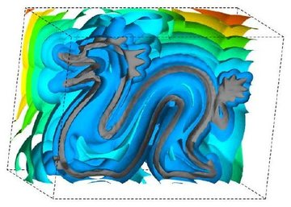
Laplacian regularized eikonal equation with Soner boundary condition on polyhedral meshes
2024 · Computers & Mathematics with Applications
Computes distance functions on 3‑D polyhedral meshes from a Laplacian-regularized eikonal equation with the Soner boundary condition, solved by a cell-centered finite volume method with decreasing regularization.
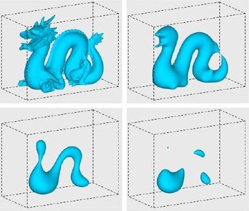
Second-order accurate finite volume method for G-equation on polyhedral meshes
2023 · Japan Journal of Industrial and Applied Mathematics
Solves the G-equation (advective, normal and mean curvature flow) on 3‑D polyhedral meshes with a second-order finite volume method, applied to premixed combustion in a gasoline direct-injection engine.
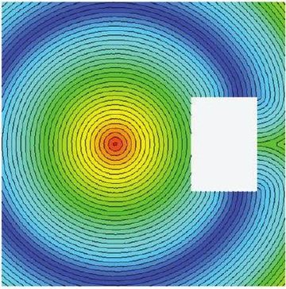
2022 · International Journal for Numerical Methods in Engineering
Computes the signed distance function to a surface on 3‑D polyhedral meshes by a cell-centered finite volume method for the time-relaxed eikonal equation with the Soner boundary condition.
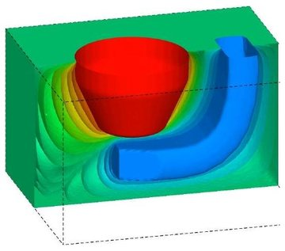
Flux balanced approximation with least-squares gradient for diffusion equation on polyhedral mesh
2021 · Discrete and Continuous Dynamical Systems - S
Solves diffusion equations with possibly discontinuous coefficients on polyhedral meshes by a cell-centered finite volume method with a flux-balanced approximation of the face flux and a least-squares gradient.
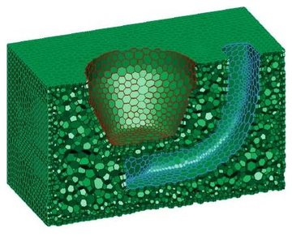
Cell-Centered Finite Volume Method for Regularized Mean Curvature Flow on Polyhedral Meshes
2020 · Finite Volumes for Complex Applications IX – Methods, Theoretical Aspects, Examples (FVCA 9, Bergen, 2020), Springer Proceedings in Mathematics & Statistics
Solves regularized mean curvature flow in level-set form on 3‑D polyhedral meshes with a cell-centered finite volume method and nonlinear Crank-Nicolson time stepping, second-order in space and time.
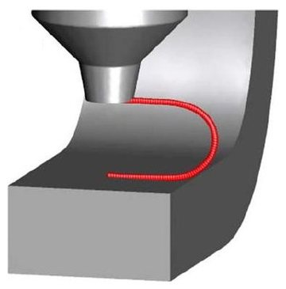
Numerical Modeling of Spark Ignition in Internal Combustion Engines
2020 · Journal of Energy Resources Technology
Models spark ignition for 3‑D CFD of spark-ignited engines by coupling spark-channel, electrical-circuit, heat-diffusion and ignition-delay submodels; the flame kernel then propagates by the G-equation.
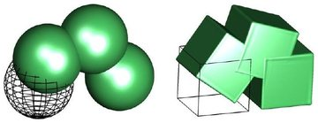
2019 · Computers & Mathematics with Applications
Solves advective and normal-flow level-set equations on polyhedron meshes with an iterative inflow-implicit outflow-explicit finite volume scheme, second-order in space and time, using 1-ring face neighbors only.
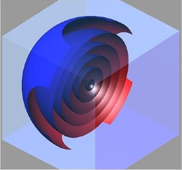
2017 · Journal of Scientific Computing
Solves propagation in the normal direction (a level-set equation) on 3‑D polyhedron meshes with a cell-centered finite volume scheme based on an inflow-based gradient over 1-ring face neighbors.
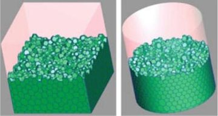
Semi-implicit Level Set Method with Inflow-Based Gradient in a Polyhedron Mesh
2017 · Finite Volumes for Complex Applications VIII – Hyperbolic, Elliptic and Parabolic Problems (FVCA 8, Lille, 2017), Springer Proceedings in Mathematics & Statistics
Solves normal-direction level-set propagation on 3‑D polyhedron meshes with a semi-implicit finite volume scheme that treats inflow implicitly, relaxing the CFL time-step restriction of small cells.
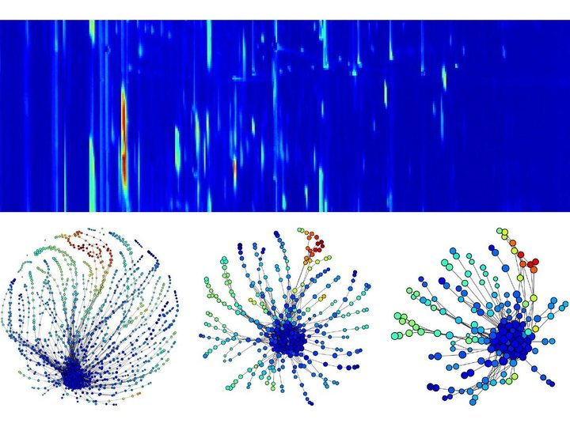
GC×GC chromatogram of a wine and its Ball Mapper graphs at three scales.Geometry-informed topological data analysis
Ball Mapper, persistent homology and signed distance functions applied to cell positions in tumor tissue and to mass-spectrometry data of wines.2 papersShow papers
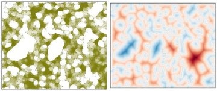
2026 · npj Systems Biology and Applications
Defines a topological malignant region by persistent homology, measures immune-cell infiltration by signed distance and local density, and relates these features to patient survival in CNS lymphoma.
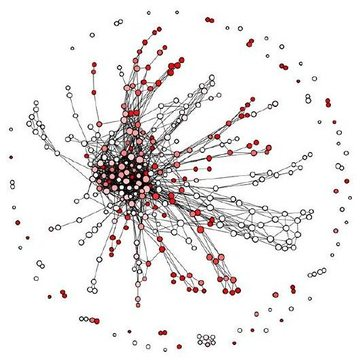
2025 · Analytical Chemistry
Uses Ball Mapper for untargeted analysis of GC×GC–HR-TOF-MS data from 34 botrytized wines, extracting sample-specific mass spectral features whose clusters align with region, producer and botrytization style.
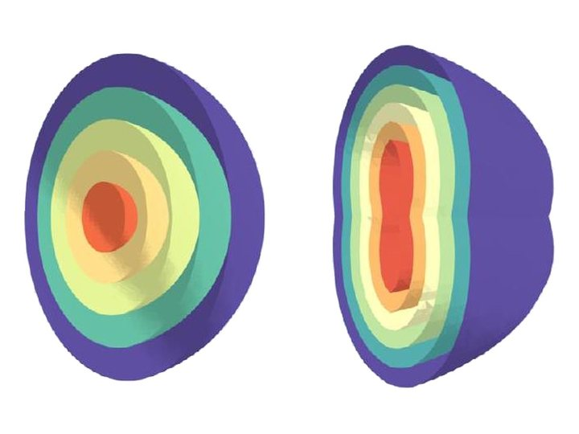
Cut-open level sets of 3‑D signed distance functions computed by a neural network (ReSDF).Neural-network solvers for PDEs
Implicit neural representations that solve the eikonal and p‑Poisson equations: redistancing of level-set functions, viscosity solutions in domains with obstacles, and surface reconstruction from point clouds.3 papersShow papers
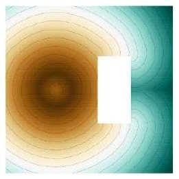
A stochastic vanishing viscosity approach for eikonal equations
2026 · Journal of Computational Physics
Solves the eikonal equation with a meshless neural network trained on a stochastic (Feynman-Kac) form of the vanishing viscosity limit, including domains with internal obstacles.
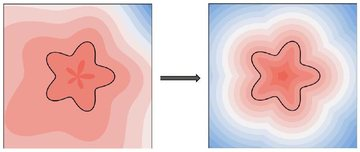
ReSDF: Redistancing implicit surfaces using neural networks
2024 · Journal of Computational Physics
Recovers the signed distance function from a given level-set function with a neural network that outputs the distance and its unit gradient, trained with geometry-based losses.
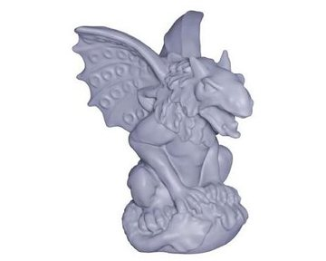
p‑Poisson surface reconstruction in curl-free flow from point clouds
2023 · Advances in Neural Information Processing Systems (NeurIPS 2023)
Reconstructs a signed distance function and surface from a raw, unoriented point cloud with an implicit neural representation constrained by the p‑Poisson equation and a curl-free condition.
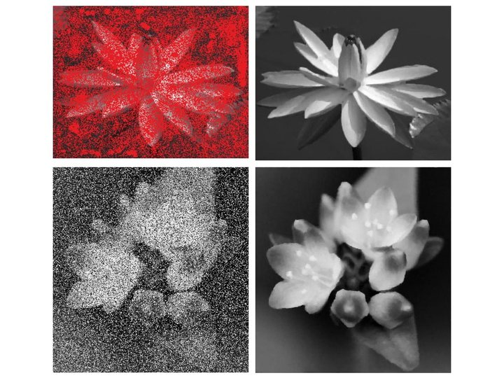
Euler's elastica: inpainting of the red regions (top) and removal of salt-and-pepper noise (bottom).Variational and PDE-based image processing
Variational models and PDEs for image denoising, inpainting, segmentation and blending: TV-Stokes models, augmented Lagrangian methods for total variation and Euler's elastica, nonlinear structure tensors and level-set active contours.13 papersShow papers
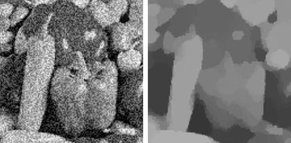
2014 · Inverse Problems
Analyzes variable-splitting and augmented Lagrangian methods for total-variation image denoising in function space, in primal and Fenchel pre-dual form, and proposes a staggered-grid discretization for the pre-dual.
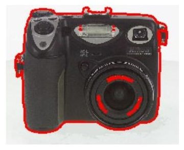
2014 · Journal of the Korean Society for Industrial and Applied Mathematics
Segments images modeled as a mixture of two Gaussian intensity distributions by adding a local region energy that reclassifies pixels in ambiguous regions using locally estimated Gaussian parameters.
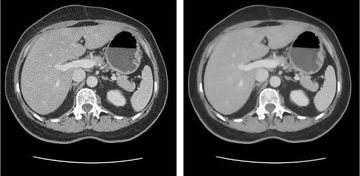
A Fast Augmented Lagrangian Method for Euler's Elastica Models
2013 · Numerical Mathematics: Theory, Methods and Applications
Minimizes Euler's elastica energy with an FFT-free augmented Lagrangian method that adds a curvature variable h = div n, applied to image denoising (including CT), inpainting and zooming.
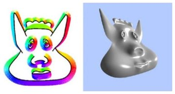
Augmented Lagrangian Method for Generalized TV-Stokes Model
2012 · Journal of Scientific Computing
Generalizes the two-step TV-Stokes model (regularize the tangential field, then fit the data) with an augmented Lagrangian solver, applied to inpainting, denoising and surface reconstruction from sparse gradients.
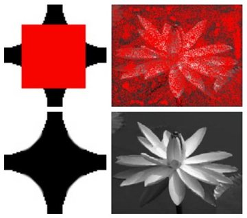
2012 · Scale Space and Variational Methods in Computer Vision (SSVM 2011), Lecture Notes in Computer Science
Minimizes the curvature-based p‑elastica energy with two augmented Lagrangian algorithms that simplify the normal-field subproblem, applied to image inpainting and curve reconstruction from noisy unorganized point sets.
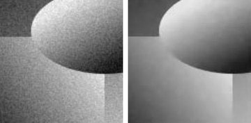
A Fast Augmented Lagrangian Method for Euler's Elastica Model
2012 · Scale Space and Variational Methods in Computer Vision (SSVM 2011), Lecture Notes in Computer Science
Minimizes Euler's elastica energy for image denoising with an augmented Lagrangian method whose curvature variable h = div n makes each subproblem closed-form or linear, without FFT.
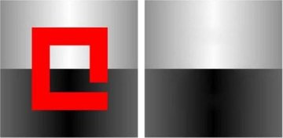
Orientation-Matching Minimization for Image Denoising and Inpainting
2011 · International Journal of Computer Vision
Denoises and inpaints images in two steps: the TV-Stokes equation regularizes the tangent vector field, then an orientation-matching minimization aligns the image gradient with the regularized normal field.
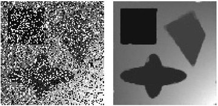
A Fast Algorithm for Euler's Elastica Model Using Augmented Lagrangian Method
2011 · SIAM Journal on Imaging Sciences
Minimizes Euler's elastica energy with an augmented Lagrangian method whose subproblems are solved in closed form or by FFT, applied to image denoising, inpainting and zooming.
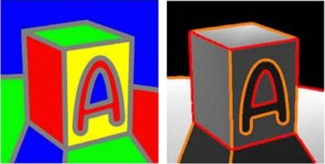
Geometric attraction-driven flow for image segmentation and boundary detection
2010 · Journal of Visual Communication and Image Representation
Segments images with weak edges, holes and multiple junctions by level-set active contours that combine a geometric attraction-driven flow, a binary edge function and a binary balloon force.
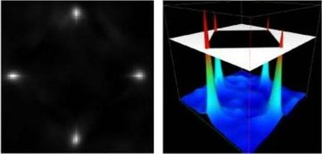
A Nonlinear Structure Tensor with the Diffusivity Matrix Composed of the Image Gradient
2009 · Journal of Mathematical Imaging and Vision
Regularizes the structure tensor of an image by a nonlinear PDE whose diffusivity matrix is built from the image gradient, applied to denoising, enhancement and corner detection.
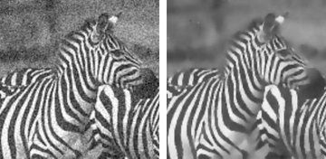
Image Denoising Using TV-Stokes Equation with an Orientation-Matching Minimization
2009 · Scale Space and Variational Methods in Computer Vision (SSVM 2009), Lecture Notes in Computer Science
Denoises images in two steps: the TV-Stokes equation regularizes the tangent vector field, then an orientation-matching minimization reconstructs an image with sharp edges and smooth regions.
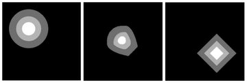
A variational approach to blending based on warping for non-overlapped images
2007 · Computer Vision and Image Understanding
Blends source and target images, including non-overlapping ones, by a variational model whose two deformation fields warp both shapes toward a common intermediate shape.
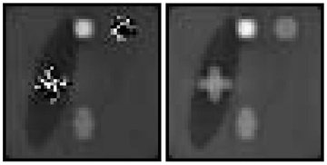
2006 · IEEE Transactions on Medical Imaging
Recovers the magnetic flux density Bz in low-MR-signal regions for MREIT conductivity imaging by level-set segmentation and a Dirichlet Laplace problem, tested numerically and on a piglet.
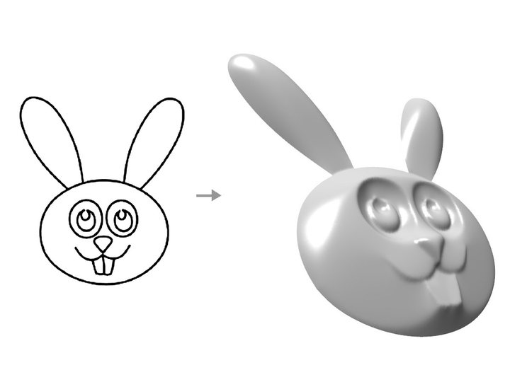
A line drawing and the 3‑D surface reconstructed from it.Surface reconstruction
Reconstruction of surfaces and curves from sketch strokes, sparse gradients and noisy point clouds, and spherical inflation of the cerebral cortex.4 papersShow papers
p‑Poisson surface reconstruction in curl-free flow from point clouds
2023 · Advances in Neural Information Processing Systems (NeurIPS 2023)
Reconstructs a signed distance function and surface from a raw, unoriented point cloud with an implicit neural representation constrained by the p‑Poisson equation and a curl-free condition.
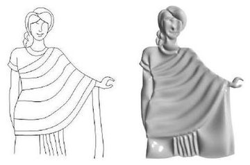
Stroke-Based Surface Reconstruction
2013 · Numerical Mathematics: Theory, Methods and Applications
Reconstructs a 3‑D height map from sparse artist strokes by interpolating a curl-free normal field with TV/H¹ regularization and integrating it; stroke types create ridges, valleys and jumps.
Augmented Lagrangian Method for Generalized TV-Stokes Model
2012 · Journal of Scientific Computing
Generalizes the two-step TV-Stokes model (regularize the tangential field, then fit the data) with an augmented Lagrangian solver, applied to inpainting, denoising and surface reconstruction from sparse gradients.
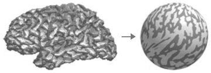
2008 · International Journal of Imaging Systems and Technology
Maps a genus-zero cortical surface, represented as a simplex mesh, onto a sphere without folded polygons, deforming vertices in 2‑D polar coordinates and then minimizing linear distortion.